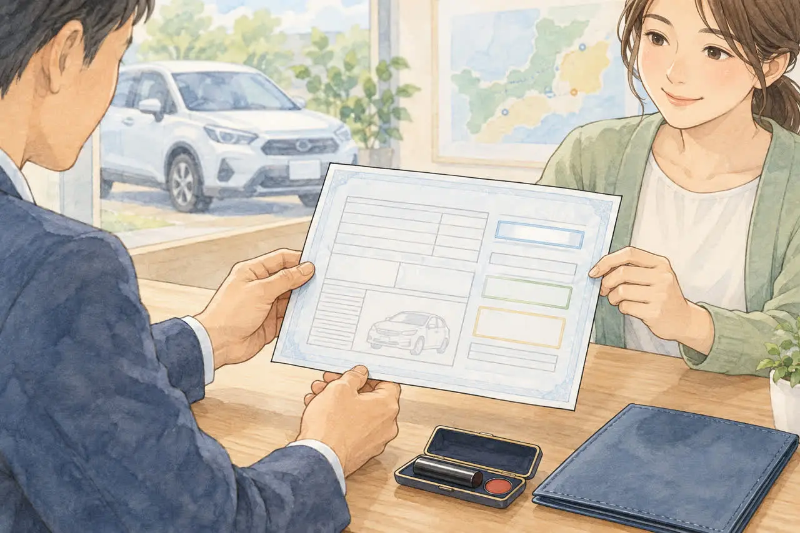

ナンバーの地名と窓口で迷っている方へ
足立ナンバーの廃車はどこで？
足立の窓口が受け持つ7区と、他地域ナンバーの手続き
公開
こんにちは、東京都足立区江北で自動車解体・廃車買取をしている「大崎商店 環七店」です。
「車のナンバーは『品川』だけど、今は足立区に住んでいる。どこで廃車するの？」
「ナンバーが『足立』の車は、足立の窓口に行けばいい？葛飾区や荒川区に住んでいる場合は？」
「引っ越しをしたけれど、ナンバーはそのまま。廃車の窓口はどこ？」
廃車のご相談では、ナンバープレートの地名と、住まいが違う車について、こんな質問をいただきます。
結論からお伝えすると、普通車の一時抹消・永久抹消や、軽自動車の一時使用中止・解体返納の窓口は、基本的に「使用の本拠の位置」の管轄で決まります。 ただし、住所・名義の変更と抹消を一緒に行う場合や、すでに一時抹消などを済ませた車の解体届出では、確認する窓口が変わります。ナンバーの地名だけで判断せず、車検証の情報と今回行う手続きを、依頼先に伝えましょう。
この記事では、足立の窓口が受け持つ区（足立区・荒川区・台東区・墨田区・江東区・葛飾区・江戸川区）と、窓口の決まり方、車検証のどこを見ればよいかを、やさしくご紹介します。後半では、足立区の大崎商店の場合もご紹介します。
※窓口の受付時間や、管轄の範囲は変わることがあります。お出かけ前に、窓口の案内をご確認ください。
① 廃車の窓口は、「使用の本拠」と「行う手続き」で確認します
| 車の種類 | 廃車の窓口 | 決まり方 |
|---|---|---|
| 普通車（一時抹消・永久抹消） | 運輸支局・自動車検査登録事務所 | 基本は使用の本拠の位置の管轄。住所・名義の変更を伴う場合は、その内容も確認 |
| 軽自動車（一時使用中止・解体返納） | 軽自動車検査協会の事務所・支所・分室 | 基本は使用の本拠の位置の管轄 |
| 一時抹消・一時使用中止済みの車の解体届出 | 普通車は運輸支局等、軽自動車は軽自動車検査協会 | 最寄りの窓口で手続きできます。必要書類は手続きに応じて確認 |
（参考：関東運輸局・足立自動車検査登録事務所、軽自動車検査協会・解体返納）
ナンバーの地名は管轄を知る手がかりですが、現在の住まい・車検証の記録・今回の手続きを確認することが大切です。引っ越し後の変更が済んでいない場合に、古い車検証の住所だけで申請先を決めないでください。
「使用の本拠の位置」は、その車を主に使い、管理する拠点です。所有者の住所や、車を一時的に置いている場所と必ずしも同じではありません。解体届出の提出先は、普通車の公式案内・軽自動車の公式案内でも確認できます。
② 足立の窓口が受け持つのは、どの区？
※地図風のイラストは概念図です。実際の区界・窓口の位置は、下の公式案内をご確認ください。
東京都内の、普通車の廃車（抹消登録）の窓口は、管轄区域で分かれています。
| 窓口 | 管轄区域（登録関係） |
|---|---|
| 足立自動車検査登録事務所 | 台東区、墨田区、江東区、荒川区、足立区、葛飾区、江戸川区 |
| 東京運輸支局 | 千代田区、中央区、港区、品川区、目黒区、大田区、世田谷区、渋谷区、島しょ部 |
| 練馬自動車検査登録事務所 | 新宿区、文京区、中野区、杉並区、豊島区、北区、板橋区、練馬区 |
| 多摩自動車検査登録事務所 | 立川市、武蔵野市、三鷹市、府中市、調布市、町田市、多摩市など（全域は公式表で確認） |
| 八王子自動車検査登録事務所 | 八王子市、青梅市、日野市、福生市、あきる野市、羽村市、瑞穂町、日の出町、奥多摩町、檜原村 |
（参考：関東運輸局の各事務所のページ：足立・東京・練馬・多摩）
葛飾区・荒川区・台東区・墨田区・江東区・江戸川区にお住まいの方も、普通車の窓口は、足立自動車検査登録事務所（足立区南花畑）です。北区は、足立ではなく、練馬自動車検査登録事務所の管轄です。
### 普通車・軽自動車：足立の窓口で扱うナンバーの地名
次の地名と区の対応は、東京運輸支局の管轄表と、軽自動車検査協会の管轄表の両方で確認できます。普通車は足立自動車検査登録事務所、軽自動車は東京主管事務所 足立支所が担当します。
| ナンバーの地名 | 区 |
|---|---|
| 足立 | 足立区・荒川区・台東区・墨田区 |
| 江東 | 江東区 |
| 葛飾 | 葛飾区 |
| 江戸川 | 江戸川区 |
（参考：東京運輸支局・ナンバーと管轄区域の対応表、軽自動車検査協会・東京主管事務所 足立支所）
「足立の窓口の管轄」と「足立ナンバーが交付される区域」は同じではありません。 江東・葛飾・江戸川ナンバーも、足立の窓口が担当します。ご当地ナンバー導入前からの足立ナンバーを使っている車もあるので、地名だけで判断しないようにしましょう。
窓口の受付は、平日の8:45〜11:45、13:00〜16:00です。土日・祝日・12/29〜1/3はお休みです。
③ ナンバーの地名と、住まいが違うのは、どんなとき？
ナンバープレートの地名は、番号が交付されたときの使用の本拠に対応する地域名です。同じ事務所の管轄内でも、地名が複数あることがあります。次のような場合に、地名と今の住まいが食い違うことがあります。
- 引っ越しをしたが、ナンバーを変えていない
- 中古車を、他の地域から買った
- ご家族や知人の車を譲り受けた
- 転勤などで、他の地域に住んでいる
引っ越しで、車を主に使う場所（使用の本拠の位置）が変わると、普通車は変更登録、軽自動車は車検証の記録の変更が必要です。管轄が変わる場合は、ナンバーの変更が必要になることもあります。変更登録の期限やナンバー交換の扱いは、制度が変わることがあるため、国土交通省や軽自動車検査協会の案内、窓口で確認してください。
住所変更が済んでいなくても、必要な変更と廃車を組み合わせて進められる場合があります。 普通車には、変更登録と一時抹消を同時に行う手続きがあります（国土交通省OSS・変更一時抹消登録）。先に旧管轄へ行く、ナンバーを付け替える、とご自身で決めず、必要な手続きと申請先を確認してください。
普通車で、車検証の所有者の住所・氏名と印鑑証明書が違う場合などは、つながりを証明する書類が必要になります。軽自動車は必要書類が異なるため、同じ書類を一律にそろえる必要はありません。くわしくは、車検証と今の住所・名前が違う場合の廃車手続きの記事をご覧ください。
④ 車検証のどこを見ればいい？

窓口を決めるときは、車検証の次の項目を見ます。
| 項目 | 何がわかる？ |
|---|---|
| 使用の本拠の位置 | 廃車の窓口を決める基準になります |
| 登録番号・車両番号（ナンバー） | 番号交付時の地域名を確認する手がかりです。住所変更の有無もあわせて確認します |
| 所有者の氏名・住所 | 書類（印鑑証明書など）や、委任状の名義に関わります |
| 使用者の氏名・住所 | 車を使用する方の情報です。所有者と異なる場合は、必要な同意・書類を確認します |
電子車検証（ICタグ付き）の券面には、所有者の住所や使用の本拠の位置など、表示されない項目があります。「自動車検査証記録事項」や車検証閲覧アプリで、最新の記録を確認してください。古い記録事項だけを見て、変更後の情報と取り違えないようにしましょう。
迷うときは、車検証（または記録事項）を、依頼先に見せてください。 窓口と、必要な書類を、案内してもらえます。
⑤ ケース別：どの窓口になる？
| こんな場合 | 窓口の考え方 |
|---|---|
| 使用の本拠が、足立区・荒川区・台東区・墨田区・江東区・葛飾区・江戸川区 | 一時抹消・永久抹消や、一時使用中止・解体返納の窓口は、普通車が足立自動車検査登録事務所、軽自動車が軽自動車検査協会 足立支所です |
| 品川ナンバーのまま、引っ越して現在の使用の本拠は足立区 | 住所変更の状況と、変更・抹消を同時に行うかを確認します。旧ナンバーだけで申請先を決めず、足立の窓口や依頼先に相談してください |
| 使用の本拠が北区 | 普通車は、練馬自動車検査登録事務所の管轄です（足立ではありません） |
| 引っ越し先が別の管轄で、住所変更も済んでいる | 一時抹消・永久抹消などは、変更後の使用の本拠を管轄する窓口です |
| 引っ越して、変更登録をしていない | 車検証の記載と、今の住所が違います。窓口と書類を、依頼先や窓口に確認してください |
| 遠方に住んでいて、車だけが足立区にある | 車の現在地だけでは決まりません。車検証の情報と、所有権・使用の本拠を変更するかを依頼先に伝えます |
| すでに一時抹消・一時使用中止をした車を解体した | 解体届出は、最寄りの窓口で手続きできます |
窓口が自宅から遠い場合は、依頼先に任せる方法もあります。ご自身で行くときは、窓口の受付時間（平日の日中）にご注意ください。くわしくは、廃車の手続きは土日にできる？、廃車は自分でできる？の記事をご覧ください。
⑥ 軽自動車の場合は？
軽自動車の一時使用中止・解体返納は、基本的に使用の本拠の位置を管轄する、軽自動車検査協会の事務所・支所・分室で手続きをします。すでに一時使用中止をした車の解体届出は、最寄りの事務所等です。窓口は、手続き事務所検索システムや、全国の事務所・支所一覧から確認できます。
軽自動車は、窓口が運輸支局ではなく、軽自動車検査協会です。普通車と、窓口の場所が違う地域もあります。
よくある質問
Q. ナンバーが「足立」なら、足立の窓口で廃車できますか？
A. 通常の抹消・返納手続きは、使用の本拠の管轄で確認します。ただし、引っ越し後の住所変更や、名義変更を伴う場合は申請先を確認してください。一時抹消などを済ませた車の解体届出は、最寄りの窓口で行えます。
Q. 引っ越しをして、ナンバーを変えていません。廃車はできますか？
A. 必要な変更と廃車を組み合わせて進められる場合があります。普通車では所有者の住所のつながりを証明する書類などが必要です。軽自動車は書類が異なるため、依頼先に確認してください。
Q. 窓口が遠いのですが、どうすればいいですか？
A. 依頼先に、車検証を見せて相談してください。窓口への申請を、代わりに行ってもらう方法があります（普通車は委任状、軽自動車は申請依頼書などを用意します）。
Q. 他の地域のナンバーの車でも、足立区のお店に頼めますか？
A. 依頼先によります。車検証と車の所在地・状態を伝えて、対応できるか確認してください。大崎商店の対応は、後半でご紹介します。
Q. 葛飾区・荒川区・台東区に住んでいます。普通車の窓口はどこですか？
A. 足立自動車検査登録事務所（足立区南花畑）です。台東区、墨田区、江東区、荒川区、足立区、葛飾区、江戸川区が、この事務所の管轄です。北区は、練馬自動車検査登録事務所の管轄です。
Q. 軽自動車の窓口は、どこで調べますか？
A. 軽自動車検査協会の「手続き事務所検索システム」で、使用の本拠の位置から調べられます。
大崎商店の場合：ナンバーの地名が違う車
ここからは、足立区の大崎商店の場合をご紹介します。
大崎商店では、足立区内・足立区外を問わず、車の引き取り・買取のご相談を受け付けています。
- 窓口の確認：車検証（または自動車検査証記録事項）の、「使用の本拠の位置」を確認します。ナンバーの地名だけでは判断しません
- ナンバーの地名が足立以外の車も、引き取りできます。 練馬・品川・横浜など、足立区外の窓口が管轄の車も、手放すことが前提のご依頼なら、お引き受けできます
- 手続きの進め方：車を手放していただく前提のため、通常は所有権を当店へ移し、大崎商店に名義を変更して手続きします。お客様の名義のまま一時抹消などを行う場合は、使用の本拠の位置を大崎商店の住所に変更して、手続きを進めます。 遠方の窓口へ出向く方法ではありません。必要な書類は、ご依頼時にご案内します
- 還付金：還付金がある車は、買取価格に反映します（含めた分が、お客様に別途、同額支払われるわけではありません）。金額は、ご依頼時にご案内します
- 日数の目安：ナンバーの地名が足立以外でも、通常の廃車と変わりません（所有権が大崎商店に移る前提のためです）。一時抹消は、必要書類がそろっていれば原則1週間以内が目安です（祝日が続くときなどは、変わることがあります）。永久抹消・解体を伴う手続きは、入谷店の作業状況によって日数が変わります
- 手続き：車の引き取り・買取にともなう手続きを、当店で行います。手続きだけの代行のご依頼は、お受けしていません
- ナンバープレート：手続きのタイミングで、当店が取り外して、窓口に提出します。お客様が外す必要はありません
- 書類：委任状・譲渡証明書は、当店で用意します（遠方の方は、郵送でやり取りできます）
引き取りできる範囲と費用は、ナンバーの地名ではなく、車の所在地や状態を確認してご案内します。店舗・足立の窓口の場所は、足立区で廃車するなら知っておきたいことの記事もご覧ください。
大崎商店では、
- 解体費用・手続き代行費用・印紙代は別請求しません
- 足立区内は、引き取り無料
- 足立区外も、買取価格がつかない車は、環七店から片道約30分圏内は引き取り無料
- 買取価格がつく車は、圏外でも、所在地と車の状態によっては無料で引き取り（事前にご案内します）
- 車のお持ち込みは、どこからでも歓迎（基本は環七店。日時は、事前にお電話でご相談ください）
${SHOPS_TITLE}
電話で相談する 03-3854-4141メールで相談する（フォーム）ご来店の前に、お電話ください。引き取りなどで外出していることもあり、お電話いただければ、受け入れの可否や、ご案内できる日時をお伝えできます。
大崎商店 環七店
電話：03-3854-4141
〒123-0872
東京都足立区江北7丁目1−3
営業時間：月〜土 10:00〜18:00
休業日：日曜・祝日
環七沿い／舎人ライナー
西新井大師西駅
大崎商店 入谷店
電話：03-3899-2837
〒121-0836
東京都足立区入谷7丁目5−11
営業時間：月〜土 9:30〜17:30
休業日：日曜・祝日・第2土曜
引き取りやご相談のお電話は、環七店がスムーズです。車検証（または自動車検査証記録事項）をお手元にご用意いただくと、ご案内がスムーズです。
※掲載のイラストはAIで作成したイメージです。実際の店舗・役所の窓口を撮影したものではありません。
参考：関東運輸局・足立自動車検査登録事務所／東京運輸支局・管轄区域とナンバー／北陸信越運輸局・永久抹消登録と解体届出／軽自動車検査協会・自動車検査証返納届（一時使用中止）／解体返納／軽自動車・解体届出／国土交通省・電子車検証FAQ